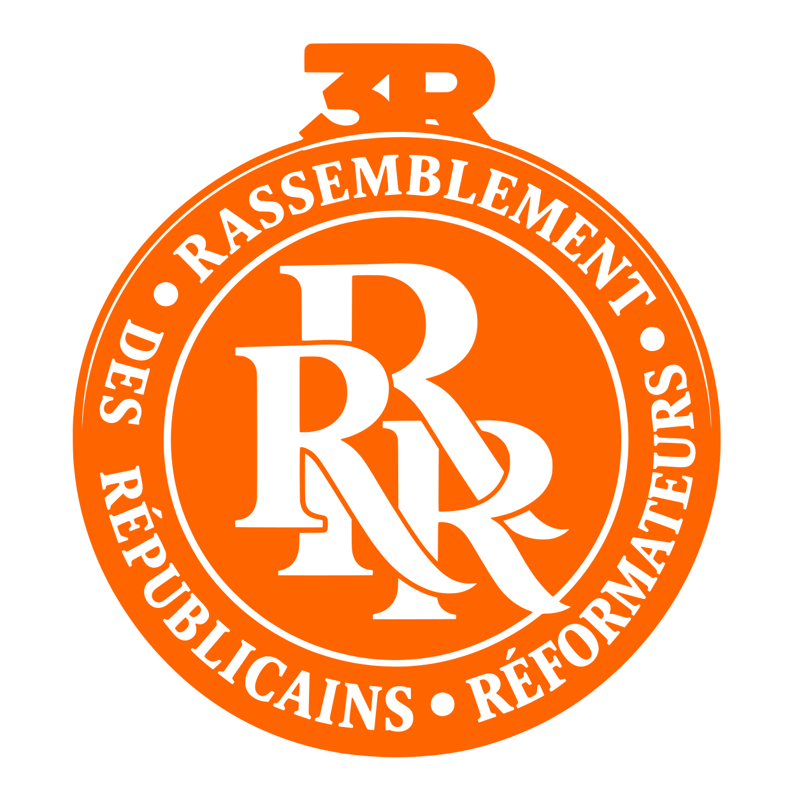

“
Une école publique forte dans chaque commune.
#3R · Programme
Ce guide fixe les règles d'usage du logo, des couleurs, des typographies et du ton du parti. Il s'adresse aux équipes de campagne, aux fédérations, aux graphistes et aux imprimeurs, pour que chaque affiche, tract ou publication soit reconnue au premier regard.
Le médaillon associe le sigle « 3R » en cimier, le nom complet du parti en couronne et le monogramme RRR entrelacé au centre : trois lettres qui se tiennent, comme les trois mots du nom. Il se reproduit toujours en entier ; le sigle et le monogramme ne s'utilisent jamais seuls.
Version de référence, sur blanc ou gris chaud. À privilégier partout où c'est possible.
Le médaillon orange ressort fortement sur le bleu nuit. Idéal pour les affiches et les fonds de scène.

Sur un fond orange 3R, on utilise la version blanche : t-shirts, banderoles, réseaux sociaux.

Pour la sérigraphie, la broderie ou la gravure en une seule encre. Existe en orange et en blanc.
Aucun texte, image ni bord de page ne doit entrer dans la zone pointillée. Sa marge x est égale à la hauteur du cimier « 3R » (environ 1/8 de la largeur du logo).
En dessous de 25 mm à l'impression ou de 80 px à l'écran, le nom écrit en couronne devient illisible. Pour un favicon ou une très petite icône, on utilise le fichier favicon.ico prévu à cet effet.
On redimensionne toujours en gardant les proportions.
Seules les versions couleur, orange et blanche existent.
Pas d'ombre, de relief, de contour ni de dégradé.
Sur une photo ou un motif, on pose le logo sur un aplat uni.
Le médaillon reste toujours droit, cimier en haut.
Le médaillon n'est jamais coupé par un bord ou une image.
L'orange 3R est la couleur qu'on reconnaît de loin, sur une affiche comme sur un écran. Le bleu nuit lui donne du sérieux et porte les textes. Le blanc et le gris chaud laissent respirer les mises en page.
Couleur complémentaire réservée aux textes : Orange foncé #C24A00 (RVB 194 · 74 · 0), pour écrire en orange sur fond blanc de façon lisible. Les références Pantone et CMJN sont des équivalences à valider sur épreuve avec l'imprimeur.
L'orange garde sa force quand il reste rare : un logo, un mot-clé, un bouton, un bandeau. Sur les supports militants (t-shirts, banderoles), il peut devenir la couleur de fond.
Pour un texte courant sur fond orange, on écrit en bleu nuit, pas en blanc : le blanc sur orange reste trop pâle à lire en petit, surtout sur téléphone et en plein soleil.
Libre Caslon Text reprend l'esprit des lettres à empattements du logo : elle donne aux titres la gravité d'un fronton de mairie. Source Sans 3 assure la lecture des textes, des tracts aux écrans de téléphone. Les deux sont gratuites (Google Fonts) et couvrent les accents du français.
Le texte courant se compose en Source Sans 3, en bleu nuit sur fond clair, avec des lignes d'environ 65 caractères. On réserve le gras aux mots-clés et on évite les paragraphes entiers en capitales.
Dans Word ou PowerPoint, si les polices ne sont pas installées, on utilise Georgia pour les titres et Calibri ou Arial pour le texte.
Quatre traits guident chaque prise de parole, du discours de meeting au post sur les réseaux sociaux.
On parle à tous les citoyens, au « nous ». On cherche ce qui unit plutôt que ce qui divise.
On propose des solutions concrètes, chiffrées, avec un calendrier. On parle d'action et de résultats.
On respecte les institutions, les adversaires et les faits. On cite ses sources.
Des mots simples, des phrases courtes, des exemples du quotidien : l'école, la santé, l'emploi, les routes.
Proposition de signature : « Rassembler pour réformer ». Elle reprend les deux idées du nom. Elle est à valider par la direction du parti avant tout usage officiel.
Les supports types du parti, de l'affiche de campagne au drapeau de meeting. Les textes entre crochets (dates, lieux, noms) sont des exemples à remplacer.
Les photos montrent des citoyens réels, sur le terrain. Pour les affiches et les bannières, elles passent en duotone bleu nuit et orange : l'image devient immédiatement « 3R », même prise au téléphone.
Les visuels ci-contre sont des illustrations générées pour la charte. Ils seront remplacés par les vraies photos du parti.
Trois modèles : l'événement (photo et date), le candidat (portrait et nom), le message (slogan seul). Formats d'impression : 40 × 60 cm, 60 × 80 cm, 120 × 176 cm (abribus).
Carte de visite des élus et responsables, carte d'adhérent et papier à en-tête. Impression conseillée sur papier mat 350 g pour les cartes.
Pour les meetings, les cortèges et les permanences. Le drapeau reprend le médaillon blanc sur orange : il se reconnaît de loin, même en mouvement.
Photo de profil : le médaillon couleur sur fond blanc, recadré en rond. Bannière et stories reprennent le duotone et le bandeau orange.
Une école publique forte dans chaque commune.
Les objets distribués aux militants et aux sympathisants. Règle simple : l'objet est orange, bleu nuit ou écru, et le logo est toujours dans une version autorisée (couleur, blanc ou orange). On marque en sérigraphie ou en broderie avec le PDF vectoriel.
Pour les commandes : transmettre au fournisseur le PDF vectoriel et les références Pantone (Orange ≈ 1505 C, Bleu nuit ≈ 2767 C), et demander un bon à tirer (BAT) avant la production.
Tous les fichiers sont dans le dépôt du parti, dossier assets/logo/. Pour l'impression, on transmet toujours le PDF ou le SVG vectoriel, jamais une capture d'écran.
| Usage | Fichier | Format |
|---|---|---|
| Imprimeur, grand format, broderie | vectoriel/logo_3R_couleur.pdf | PDF vectoriel |
| Site web, documents numériques | vectoriel/logo_3R_couleur.svg | SVG |
| Réseaux sociaux, Word, PowerPoint | vectoriel/logo_3R_couleur_2048.png | PNG transparent |
| Sur fond orange ou foncé | vectoriel/logo_3R_blanc.svg / .pdf / _2048.png | Une couleur |
| Sérigraphie une encre orange | vectoriel/logo_3R_orange.svg / .pdf / _2048.png | Une couleur |
| Icône de site, onglet du navigateur | favicon.ico, logo_3R_192.png | ICO / PNG |
| Polices | Libre Caslon Text, Source Sans 3 | Google Fonts (gratuites) |